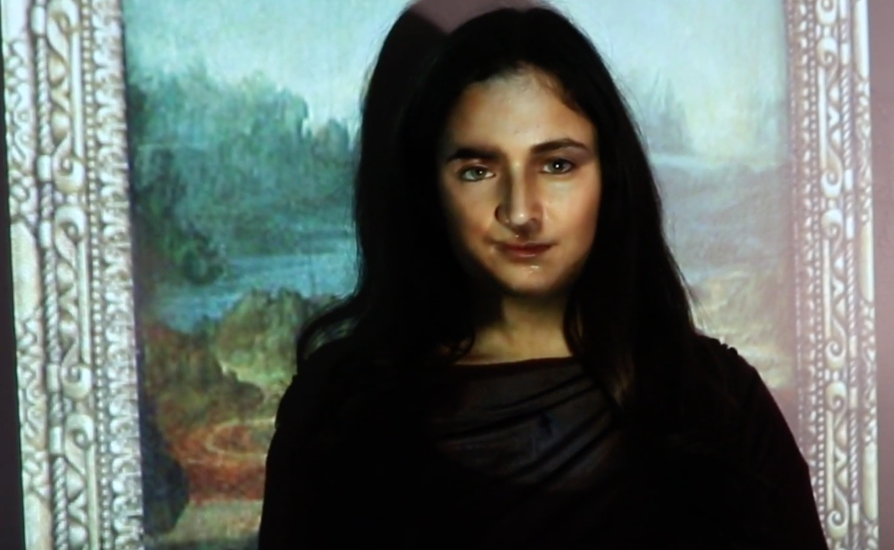

Mona Lisa comes to life and decides to speak her mind about what she has observed from within the frame. She recites a poem about how COLOR connects us all in hopes of getting through to humanity. In the poem she describes how we as a society are so quick to celebrate the beauty of colors but then discriminate based on our skin, hair, eye color. She concludes that we should view one another as equals and if she can see this within the frame so should we.
Cast and Crew
Mona Lisa: Isidora Miranda
Writer and Director: Maribel Cabrera